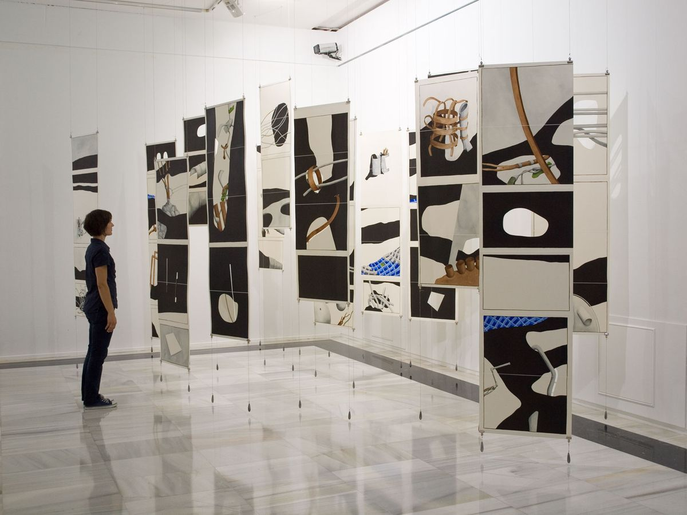
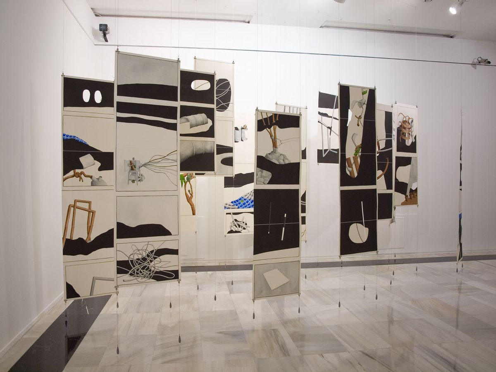
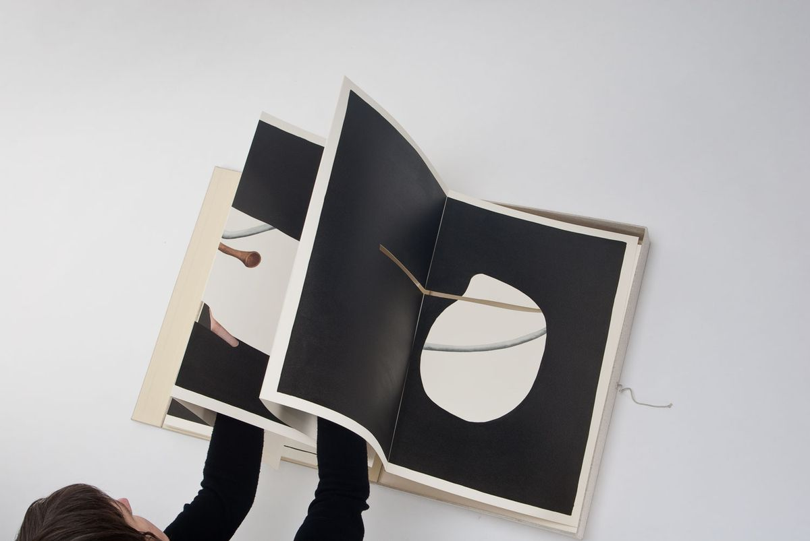
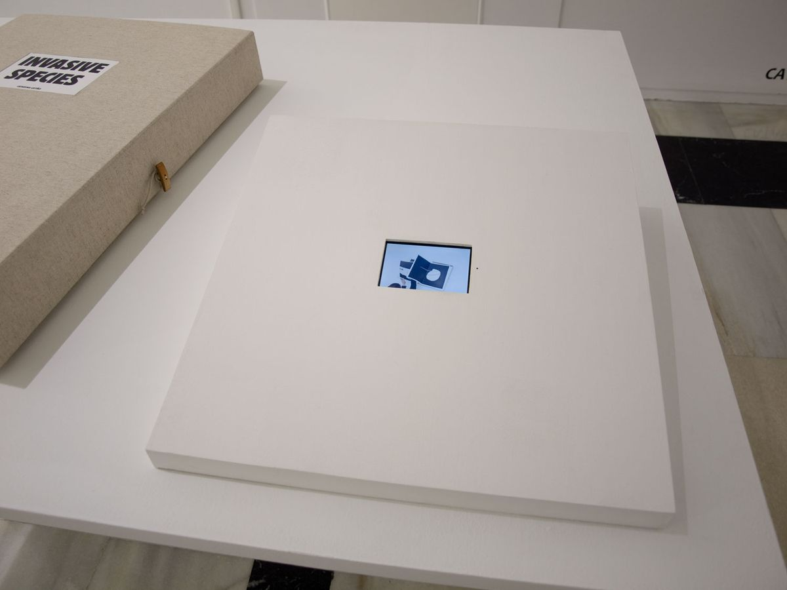

Invasive Species
Carpe Diem Arte e Pesquisa, Lisbon, 2010 · Casa das Artes, Vigo, 2011
Invasive Species is a portable installation. It functions as a book when not on display. Dimensions of closed box: 24x17x3.5 inches / 60x42x9 cm.
Watercolor and sumi ink on paper, cable, wood, lead weights, linen string and metal clips, variable dimensions.




Press
- O Regresso de Catarina (PDF)José Vegar · Jornal de Negócios · 09.04.2010 · PT
Video
- vimeo.com/688884800Video, 1:49 min, photography by Luísa Ferreira